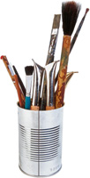

|
Graphics Library We at UMC.org understand the impact that a well developed graphic or illustration can make with any print publication or Web site. We are also aware of the time and expense it takes to develop these graphics. The UMC.org Graphics Library provides organizational, ministry-related and seasonal graphics/illustrations for use by church organizations free of charge. From time-to-time, we will be adding additional images, so please check back on a regular basis. If you have questions about the Graphics Library, please e-mail us. Most images are available in one of the three following formats:
Cross and Flame | Organizational Graphics | Ministry Graphics | Igniting Ministry Graphics |
 UMC.org
is the official online ministry of The United Methodist Church. UMC.org
is the official online ministry of The United Methodist Church.© 2023 United Methodist Communications |